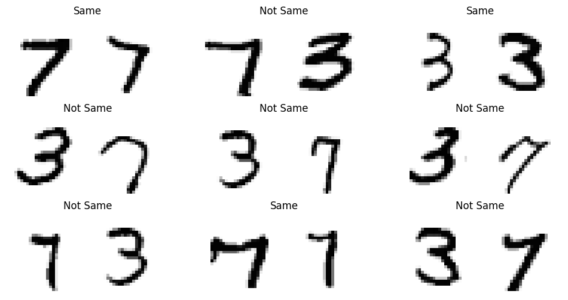

l = TfmdLists([False, 0, True, 1], Sameness())
test_eq([l.decode(o) for o in l], ['Not Same', 'Not Same', 'Same', 'Same'])Pairs Datasets
Sameness
Sameness ()
Converts boolean/binary labels into “Not Same”/“Same” labels
ImagePair
ImagePair (x=None, *rest)
Adds showing functionality to fastai’s fastuple
Pairs
Pairs (singles:fastai.data.core.Datasets, factor=10, tuple_type=<class '__main__.ImagePair'>)
Fixed dataset of randomly-sampled pairs
| Type | Default | Details | |
|---|---|---|---|
| singles | Datasets | Used to construct pairs | |
| factor | int | 10 | ratio between numer of pairs and number of single items, for each split |
| tuple_type | type | ImagePair | To add show logic for pairs |
| Returns | Datasets |
from fastai_datasets.mnist import TinyMNISTsingles = TinyMNIST()
factor = .5
pairs = Pairs(singles, factor, ImagePair)for i, (idx1, idx2) in enumerate(pairs.items):
pair, target = pairs[i]
test_eq(pair, ImagePair(singles.tls[0][(idx1, idx2)]))
test_eq(target, int(singles.i2t[idx1] == singles.i2t[idx2]))The pairing is done separately for each subset:
for singles_ss, pairs_ss in zip(singles.subsets, pairs.subsets):
test_close(len(pairs_ss), len(singles_ss)*factor, 2)
test_eq(set(pairs_ss.by_target.keys()), {'Not Same', 'Same'})
test_eq(len(pairs.by_target['Same']), len(pairs.by_target['Not Same']))pairs.dls().show_batch()